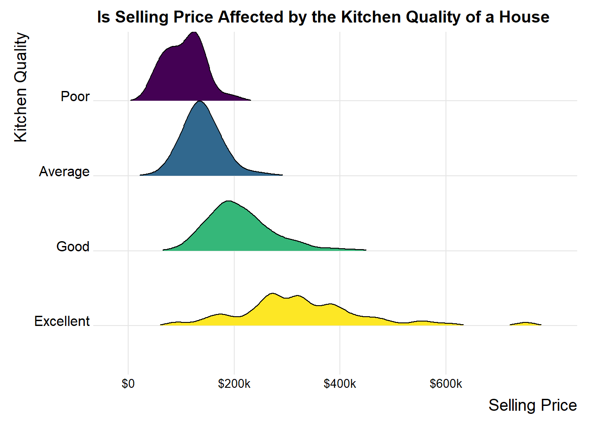
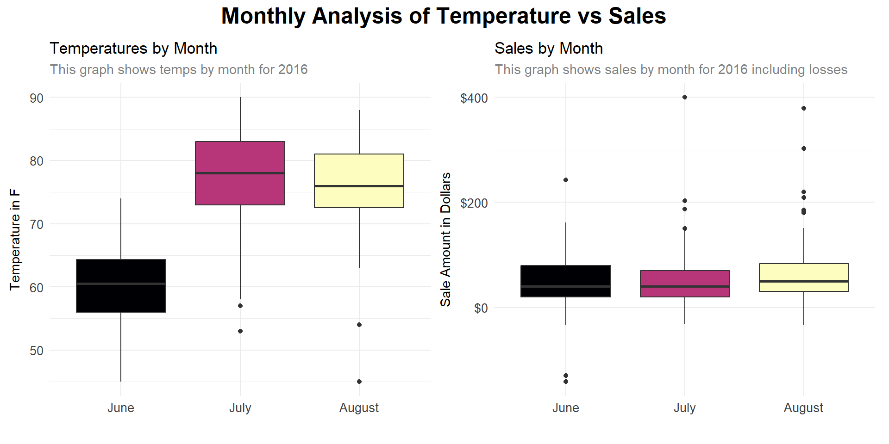
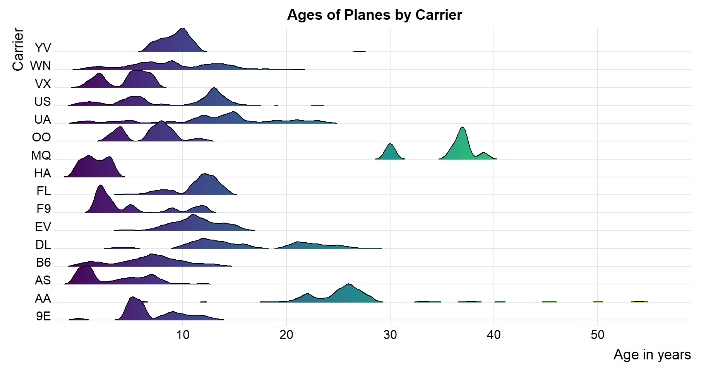
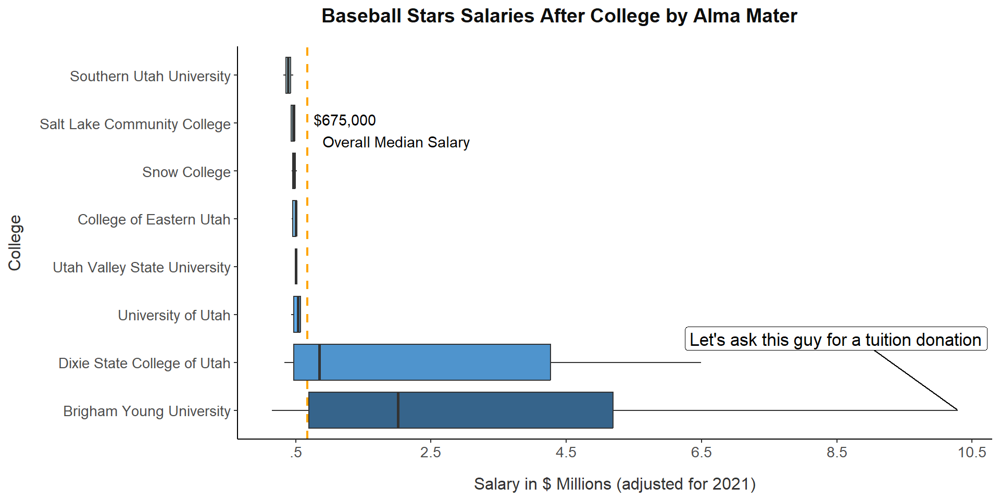
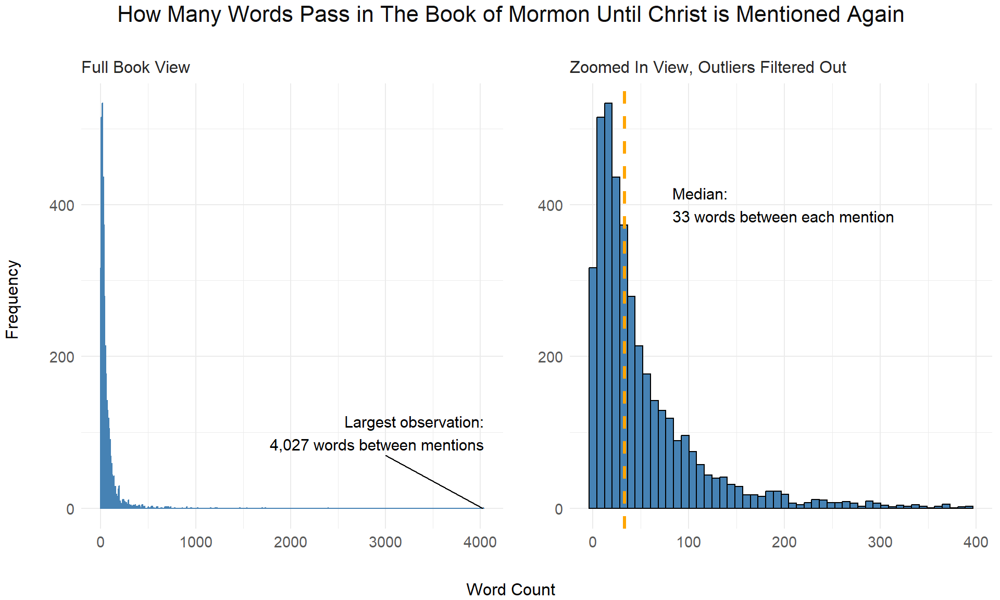
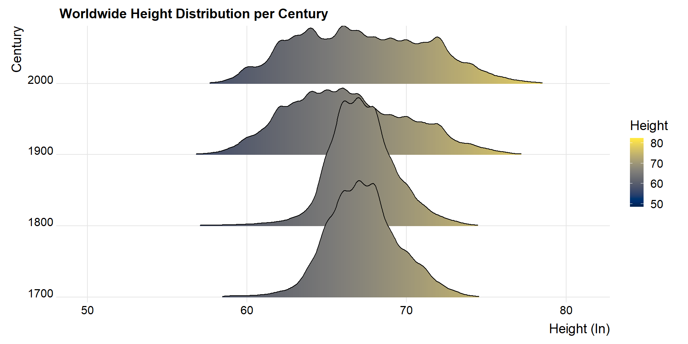
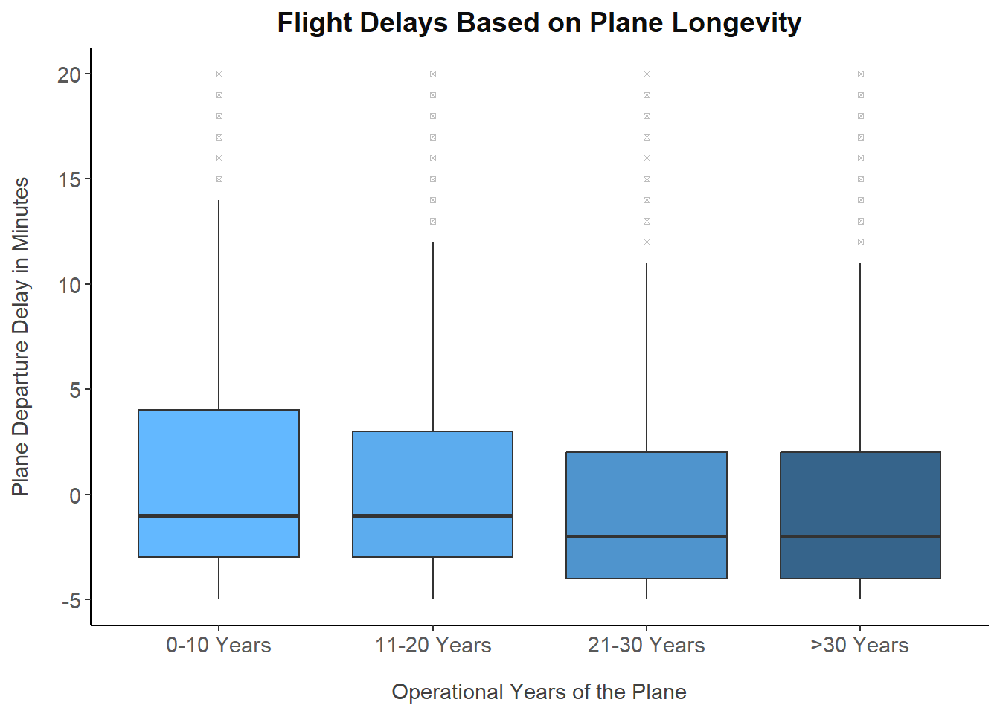

This section of my portfolio contains Distribution
Graphs I’ve created throughout the years. Take a look at them!
I created each graph from scratch in R, check out the code with the
show buttons to the top right of each graph.
library(tidyverse)
library(gridExtra)
library(grid)
dt <- read_csv("train.csv") |>
rename(bsm = "TotalBsmtSF",
`1s` = "1stFlrSF",
`2n` = "2ndFlrSF",
oq = "OverallQual",
sp = "SalePrice",
oc = "OverallCond",
rm ="TotRmsAbvGrd",
bld ="BldgType",
exq = "ExterQual",
exc = "ExterCond",
bdr = "BedroomAbvGr") |>
mutate(tsf = `1s` + `2n` + bsm,
nbd = case_when(Neighborhood %in% c("StoneBr", "NridgHt", "NoRidge") ~ 1, TRUE ~ 0),
tsf1 = ifelse(tsf>7500, 2567, tsf),
bld1 = case_when(bld %in% c("TwnhsE", "1Fam") ~ 1, TRUE ~ 0),
exq = as.character(exq),
exq = case_when(exq == "Ex" ~ 10, exq == "Gd" ~ 8,
exq == "TA" ~ 6, exq == "Fa" ~ 4,
exq == "Po" ~ 2, TRUE ~ NA_integer_),
exq = as.numeric(exq),
exc = as.character(exc),
exc = case_when(exc == "Ex" ~ 10, exc == "Gd" ~ 8,
exc == "TA" ~ 6, exc == "Fa" ~ 4,
exc == "Po" ~ 2, TRUE ~ NA_integer_),
exc = as.numeric(exc),
oq1 = case_when(oq %in% c(1,2,3, 4) ~ 4, TRUE ~ oq),
bdr1 = case_when(bdr > 3 ~ 1, TRUE ~ 0),
occ = oq+exq+exc+oc,
oc1 = ceiling((oq+exq+exc+oc)/4),
oc2 = case_when(oc1 > 6 ~ 1, TRUE ~ 0),
kq = as.character(KitchenQual),
kq = case_when(kq == "Ex" ~ 1, kq == "Gd" ~ 2,
kq == "TA" ~ 3, kq == "Fa" ~ 4,
kq == "Po" ~ 5, TRUE ~ NA_integer_),
kq = as.numeric(kq),
kq1 = case_when(kq < 3 ~ 1, TRUE ~ 0),
bth = BsmtFullBath+BsmtHalfBath+FullBath+HalfBath,
sc = case_when(SaleCondition %in% c("Partial","Alloca","Normal") ~ 1, TRUE ~ 0),
ht = case_when(HeatingQC == "Ex" ~ 1, HeatingQC == "Gd" ~ 2,
HeatingQC == "TA" ~ 3, HeatingQC == "Fa" ~ 4,
HeatingQC == "Po" ~ 5, TRUE ~ NA_integer_),
Alley = as.character(Alley),
al = replace_na(Alley, "no"),
al = case_when(al == "no" ~ 0, TRUE ~ 1),
al = as.numeric(al),
Utilities = as.character(Utilities),
ut = case_when(Utilities == c("AllPub","NoSewr") ~ 1, TRUE ~ 0),
ut = as.numeric(ut),
fp = case_when(Fireplaces > 0 ~ 1, TRUE ~ 0),
GarageFinish = as.character(GarageFinish),
gr = replace_na(GarageFinish, "no"),
gr = case_when(gr == "no" ~ 0, TRUE ~ 1),
gr = as.numeric(gr),
PoolQC = as.character(PoolQC),
pl = replace_na(PoolQC, "no"),
pl = case_when(pl == "no" ~ 0, TRUE ~ 1),
pl = as.numeric(pl),
Fence = as.character(Fence),
fnc = replace_na(Fence, "no"),
fnc = case_when(fnc == "no" ~ 0, TRUE ~ 1),
fnc = as.numeric(fnc))
library(ggridges)
library(viridis)
ggplot(dt, aes(x = sp, y = as.factor(kq), fill = as.factor(kq))) +
geom_density_ridges(scale = 1, rel_min_height = 0.01, show.legend = FALSE) +
theme_bw() +
scale_fill_viridis_d(option = "D", direction = -1) + # Use viridis for color scale
scale_x_continuous(
breaks = c(0, 200000, 400000, 600000),
labels = c("$0", "$200k", "$400k", "$600k")
) +
scale_y_discrete(
labels = c("Excellent", "Good", "Average", "Poor")
) +
labs(
x = "Selling Price",
y = "Kitchen Quality",
title = "Is Selling Price Affected by the Kitchen Quality of a House"
) +
theme_ridges()+
theme(axis.text.x = element_text(angle = 0, size = 10))
From a kaggle dataset. Many variables available to predict house slling prices by using regression methods. This graph allowed me to discover that kitchen quality was a significant powerful factor in determining a house final selling price.
If you are curious on the regression performed, check my “regression models” tab and then the house analysis option.
library(tidyverse)
library(lubridate)
library(riem)
library(patchwork)
carw <- read_csv("https://byuistats.github.io/M335/data/carwash.csv") %>%
mutate(valid = ceiling_date(with_tz(time, tz = "MST"), "hour" )) %>%
group_by(valid) %>%
summarise(hsale = sum(amount))
temps <- riem_measures(
station = "RXE",
date_start = "2016-05-13",
date_end = "2016-07-17" ) %>%
dplyr::select(valid, tmpf)%>%
mutate(valid = ceiling_date(with_tz(valid, tz = "MST"), "hour" ))
carw1 <- carw %>%
inner_join(temps, by="valid") %>%
mutate(valid = ceiling_date(valid, "month" )) %>%
mutate(month = format(valid, "%B"))
carw1$month <- factor(carw1$month, levels = month.name)
carmonth <- carw1 %>%
mutate(valid = ceiling_date(valid, "month" )) %>%
mutate(month = format(valid, "%B"))
carmonth$month <- factor(carmonth$month, levels = month.name)
p1<-ggplot(carw1, aes(month, tmpf, fill=month))+
geom_boxplot(show.legend = F) +
scale_fill_viridis_d(option = "A") +
theme_minimal()+
labs(
x="",
y="Temperature in F",
title = "Temperatures by Month",
subtitle = "This graph shows temps by month for 2016")+
theme(
plot.subtitle = element_text(colour = "grey50"),
axis.title.y = element_text(vjust = 2.7),
axis.text = element_text(color="grey25", size=10))
p2<-ggplot(carmonth, aes(month, hsale, fill=month)) +
geom_boxplot(show.legend = F) +
theme_minimal()+
scale_fill_viridis_d(option = "A") +
scale_y_continuous(breaks = seq(-200,
400,
by = 200),
labels = c("-$200",
"$0",
"$200",
"$400")) +
labs(
x="",
y="Sale Amount in Dollars",
title = "Sales by Month",
subtitle = "This graph shows sales by month for 2016 including losses")+
theme(
plot.subtitle = element_text(colour = "grey50"),
axis.title.y = element_text(vjust = 2.7),
axis.text = element_text(color="grey25", size=10))
p1 + p2 + plot_layout(ncol = 2) +
plot_annotation(title = "Monthly Analysis of Temperature vs Sales",
theme = theme(plot.title = element_text(size = 18, face = "bold", hjust = 0.5)))
My school sponsors Business Management Students to perform a small startup semester-wise. This is an analysis that aims to understand if a carwash service is more popular during hotter months.
We can conclude that sells did not vary much based on temperature alone. Other factors like low clientele, and the fact that it is new business may be driving these conclusions too.
library(tidyverse)
library(nycflights13)
library(ggridges)
library(viridis)
library(ggrepel)
planes1 <- planes |>
dplyr::select(-c(speed,engine))
flights1 <- flights |>
dplyr::select(-c(month, day, time_hour))
good1 <- flights1 |>
right_join(planes1, by = "tailnum") |>
right_join(airlines, by = "carrier") |>
mutate("age"=year.x-year.y) |>
mutate("ages" = case_when(
age <= 10 ~ "0-10",
age <= 20 ~ "11-20",
age <= 30 ~ "21-30",
TRUE ~ ">30"
)) |>
mutate(ages = factor(ages, levels = c("0-10", "11-20", "21-30", ">30"))) |>
dplyr::select(carrier, name, age, ages, distance, dep_delay, tailnum, model)
goodm <- good1 |>
group_by(ages,carrier) |>
summarise(mdlay = mean(dep_delay))
good <- good1 |>
group_by(tailnum) |>
summarise(
distance= sum(distance)) |>
right_join(good1, by = "tailnum") |>
dplyr::select(-distance.y) |>
rename(distance = distance.x) |>
group_by( tailnum, carrier, ages, distance, model) |>
summarise() |>
group_by(model, ages) |>
summarise(distance=mean(distance))
top1s <- good |>
group_by(ages) |>
top_n(3, distance) |>
arrange(ages, -distance)
ggplot(good1, aes(x = age, y = as.character(carrier), fill= ..x..)) +
geom_density_ridges_gradient( rel_min_height = 0.005, show.legend = F) +
scale_fill_viridis() +
scale_y_discrete(expand = c(0.01, 0)) +
scale_x_continuous(expand = c(0.01, 0), breaks = c(10,20,30,40,50))+
labs(
x="Age in years",
y="Carrier",
title= "Ages of Planes by Carrier"
)+
theme_ridges()+
theme(
plot.title = element_text(hjust = .5, size=14)
)
We can see that with the exceptions of American Airlines and Envoy Air (both of them having the oldest planes in general) all the others have a little similar distribution, none of them with a median greater than 20 years on their planes
library(tidyverse)
library(Lahman)
library(ggrepel)
library(MASS)
library(priceR)
library(viridis)
# Redirect all output to a temporary file
sink(tempfile())
# Run the data processing and plotting inside invisible(capture.output())
invisible(capture.output({
# Combine all data and adjust for inflation
pl.info <- People |>
inner_join(CollegePlaying, by = "playerID") |>
inner_join(Schools, by = "schoolID") |>
filter(state == "UT") |>
dplyr::select(playerID, birthYear, nameGiven, weight, height, name_full) |>
inner_join(Salaries, by = "playerID") |>
rename("year" = yearID) |>
mutate(group = case_when(
year <= 2000 ~ 0,
year > 2000 & year <= max(year) ~ 1
)) |>
mutate(inflation = adjust_for_inflation(
price = salary, from_date = year,
country = "US",
to_date = 2021))
# Subset of players
pl2 <- pl.info |>
filter(group == 1)
# Calculate median salaries
median_salaries <- pl.info |>
group_by(name_full) |>
summarise(median_salary = median(salary)) |>
arrange(desc(median_salary))
# Set factor levels based on median salaries
pl.info$name_full <- factor(pl.info$name_full, levels = median_salaries$name_full)
# Get player with the highest salary
player_highest_salary <- pl.info |>
filter(inflation == max(inflation)) |>
dplyr::select(playerID, name_full, inflation, year)
# Filter out data for labeling
label_data <- pl.info |>
filter(name_full != player_highest_salary$name_full)
# Compute overall median
overallmn <- median(pl.info$salary)
# Group data
gro <- pl.info |>
group_by(nameGiven, name_full, year, salary, inflation) |>
summarise()
# Plot the data
ggplot(pl.info, aes(y = name_full, x = inflation, fill=name_full))+
geom_vline(xintercept = overallmn, linetype = "dashed", color = "orange", size=.8) +
annotate("text", x = overallmn, y = Inf, label = "$675,000\nOverall Median Salary", vjust = 3, hjust=-.1, color = "black") +
geom_label_repel(data = player_highest_salary, aes(label = "Let's ask this guy for a tuition donation"), direction = "y", nudge_y = 1.5, segment.size = 0.4,size=4.5, col="black", fill="white")+
geom_boxplot(outlier.colour = "black", outlier.shape = 7, outlier.size = 1) +
scale_fill_manual(aesthetics = "fill", values = rev(c("lightblue1","lightblue2","skyblue","skyblue2", "steelblue", "steelblue2", "steelblue3", "steelblue4")))+
scale_x_continuous( breaks = seq(500000,10500000, by=2000000), labels = c(".5", "2.5", "4.5", "6.5", "8.5","10.5"))+
theme_classic() +
labs(
y = "College",
x = "Salary in $ Millions (adjusted for 2021)",
title = "Baseball Stars Salaries After College by Alma Mater"
) +
theme(
legend.position = "none",
legend.key = element_blank(),
legend.title = element_blank(),
axis.text = element_text(size = 10.5,color="grey30"),
axis.title.x = element_text(margin = margin(t = 12),color="grey20", size=12),
axis.title.y = element_text(margin = margin(r = 12),color="grey20", size=12),
plot.title = element_text(margin = margin(b = 15), hjust = .3, color="grey5", size=14, face="bold")
)
}))
Given that here are only very few players per university we wouldn’t be able to say if the school in which they studied really had a big impact in their salary. Some of those schools are probably not competitive in baseball, so it would make sense that they don’t have high ranking players.
However if we only focus on Dixie and BYU (both schools having a large sample size) then we see that their salaries more evenly distributed if we consider Dixie having a lot less baseball stars.
The only assumption I would take here based on these graphs, is that Dixie and BYU are big baseball competitors and have had great baseball players throughout the years. Their baseball program should be good. It would be cool to compare the best colleges in baseball to see their distributions across country or world.
library(tidyverse)
library(httr)
library(stringr)
library(ggrepel)
library(scales)
library(gridExtra)
library(grid)
library(png)
# Redirect all output to a temporary file
sink(tempfile())
# Run the data processing and plotting inside invisible(capture.output())
invisible(capture.output({
url <- "https://byuistats.github.io/M335/data/BoM_SaviorNames.rds"
temp_file <- tempfile()
GET(url, write_disk(temp_file))
snm <- readRDS(temp_file)|>
as_tibble()
unlink(temp_file)
dt <- rio::import("http://scriptures.nephi.org/downloads/lds-scriptures.csv.zip") |>
as_tibble()|>
rename( title = volume_title,
text = scripture_text,
book = book_title,
reference = verse_title )|>
filter(title == "Book of Mormon")
#Counts
text <- paste(dt$text, collapse = " ")
names <- snm$name
pattern <- paste(names, collapse = "|")
divs <- str_split(text, pattern)[[1]] |>
trimws()
counts <- tibble(text = divs) |>
mutate(
text = str_replace(text, "^[[:punct:]]+", ""),
count = str_count(text, "\\S+")) |>
filter(count != 0)
avg <- median(counts$count)
largest_x <- max(counts$count)
f1 <- ggplot(counts, aes(count)) +
geom_histogram(bins = 500, col = "steelblue") +
theme_minimal() +
labs(
title = "",
subtitle = "Full Book View",
x = "",
y = ""
) +
theme(
plot.title = element_text(size = 14, color = "grey15"),
plot.subtitle = element_text(size = 12, color = "grey15"),
axis.text = element_text(size = 11, color = "grey35"),
axis.title = element_text(size = 12, color = "grey15")
) +
# Replace geom_text_repel with annotate
annotate(
"text",
x = largest_x + 10, y = 100, # Position the annotation
label = paste0("Largest observation:\n", formatC(largest_x, format = "f", big.mark = ",", digits = 0), " words between mentions"),
color = "black", size = 4, hjust = 1
) +
geom_segment(aes(y=0, yend= 70, x=4027, xend = 3000))
f2 <- ggplot(counts, aes(count)) +
geom_histogram(data = subset(counts, count < 400), bins = 50, fill = "steelblue", color = "black") +
# Replace geom_text with annotate
annotate(
"text",
x = avg+50, y = 400,
label = paste0("Median:\n", round(avg), " words between each mention"),
color = "black", size = 4, hjust = 0
) +
geom_vline(xintercept = avg, color = "orange", linetype = "dashed", linewidth = 1.2) +
theme_minimal() +
labs(
title = "",
subtitle = paste0("Zoomed In View, Outliers Filtered Out"),
x = "",
y = ""
) +
theme(
plot.title = element_text(size = 14, color = "grey15"),
plot.subtitle = element_text(size = 12, color = "grey15"),
plot.caption = element_text(size = 10, color = "grey35"),
axis.text = element_text(size = 11, color = "grey35"),
axis.title = element_text(size = 12, color = "grey15")
)
# Arrange the plots side by side
grid.arrange(
f1, f2,
ncol = 2,
top = textGrob("How Many Words Pass in The Book of Mormon Until Christ is Mentioned Again", gp = gpar(fontsize = 16, col = "grey5")),
left = textGrob("Frequency", rot = 90, gp = gpar(fontsize = 12)),
bottom = textGrob("Word Count", gp = gpar(fontsize = 12))
)
}))
I got the whole Book of Mormon in a text file and worked with it. More than a religious project, this enhanced my skills when working with plain text, which is very much used in industry procedures.
We see that the lengths between the savior’s titles don’t follow a normal distribution. It’s more of a heavy tailed, right skewed distribution. Overall, the median between each instance of one of the savior’s title’s is of 33 words.
Even disregarding a large outlier where the distance is of around 4,000 words between a mentioning of Christ and the next one (in the book of Alma), the overall book Median distance is still small of 33, and the mean 65 words between each savior’s title (which is around 1 or 2 verses).
library(tidyverse)
library(downloader)
library(rio)
library(foreign)
library(haven)
library(ggforce)
library(ggridges)
#library(hrbrthemes)
library(viridis)
GerCon <- import("https://byuistats.github.io/M335/data/heights/germanconscr.dta")
GerPr <- import("https://byuistats.github.io/M335/data/heights/germanprison.dta")
bob <- tempfile()
bobdir <- tempdir()
download.file("https://byuistats.github.io/M335/data/heights/Heights_south-east.zip", destfile = bob, mode = "wb")
unzip(bob, exdir = bobdir)
Germany18 <- read.dbf(paste(bobdir, "B6090.dbf", sep="/"))
BLSH <- read_csv("https://raw.githubusercontent.com/hadley/r4ds/main/data/heights.csv")
SPSS <- read_sav("http://www.ssc.wisc.edu/nsfh/wave3/NSFH3%20Apr%202005%20release/main05022005.sav")
GerConC <- GerCon %>%
dplyr::select(bdec, height) %>%
mutate(height_inches = height * 0.393701, study = "GerCon") %>%
rename(birth_year = bdec, height = height)
GerPrC <- GerPr %>%
dplyr::select(bdec, height) %>%
mutate(height_inches = height * 0.393701, study = "GerPr") %>%
rename(birth_year = bdec, height = height)
Ger18C <- Germany18 %>%
dplyr::select(GEBJ, CMETER) %>%
mutate(height_inches = CMETER * 0.393701, study = "Ger18") %>%
rename(birth_year = GEBJ, height = CMETER)
BLC <- BLSH %>%
filter(sex == "male") %>%
mutate(birth_year = 1950, height = height * 2.54, height_inches = height / 2.54, study = "BLSH") %>%
dplyr::select(birth_year, height, height_inches, study)
SPC <- SPSS %>%
filter(RT216F > 0) %>%
filter(RT216I >= 0, RT216I < 12) %>%
filter(DOBY >= 0) %>%
mutate(birth_year = DOBY + 1900, height_inches=(RT216F*12)+RT216I, height = height_inches*2.54, study = "WNS") %>%
dplyr::select(birth_year,height,height_inches,study)
AllH <- rbind(GerConC, GerPrC, Ger18C, BLC, SPC)
AllH$height_inches <- round(AllH$height_inches, 0)
AllH$height <- round(AllH$height, 0)
AllH$birth_year <- round(AllH$birth_year / 100) * 100
AllHMed <- AllH %>%
group_by(birth_year) %>%
summarise(
height_inchesM = median(height_inches), height_inchesSD = sd(height_inches)
)
ggplot(AllH, aes(x = height_inches, y = as.character(birth_year), fill= ..x..)) +
geom_density_ridges_gradient( rel_min_height = 0.005) +
scale_fill_viridis(name = "Height", option = "cividis") +
scale_y_discrete(expand = c(0.01, 0)) +
scale_x_continuous(expand = c(0.01, 0)) +
labs(
x="Height (In)",
y="Century",
title= "Worldwide Height Distribution per Century"
)+
theme_ridges()
Are humans getting taller by the year? This dataset suggests that we’re not. This data was obtained by web-scraping many sites online.
planes1 <- planes |>
dplyr::select(-c(speed,engine))
flights1 <- flights |>
dplyr::select(-c(month, day, time_hour))
good1 <- flights1 |>
right_join(planes1, by = "tailnum") |>
right_join(airlines, by = "carrier") |>
mutate("age"=year.x-year.y) |>
mutate("ages" = case_when(
age <= 10 ~ "0-10",
age <= 20 ~ "11-20",
age <= 30 ~ "21-30",
TRUE ~ ">30"
)) |>
mutate(ages = factor(ages, levels = c("0-10", "11-20", "21-30", ">30"))) |>
dplyr::select(carrier, name, age, ages, distance, dep_delay, tailnum, model) |>
drop_na()
goodm <- good1 |>
group_by(ages,carrier) |>
summarise(mdlay = mean(dep_delay))
good <- good1 |>
group_by(tailnum) |>
summarise(
distance= sum(distance)) |>
right_join(good1, by = "tailnum") |>
dplyr::select(-distance.y) |>
rename(distance = distance.x) |>
group_by( tailnum, carrier, ages, distance, model) |>
summarise() |>
group_by(model, ages) |>
summarise(distance=mean(distance))
top1s <- good |>
group_by(ages) |>
top_n(3, distance) |>
arrange(ages, -distance)
ggplot(good1, aes(y = dep_delay,
x = as.factor(ages),
fill = as.factor(ages))) +
geom_boxplot(
outlier.colour="grey",
outlier.shape=7,
outlier.size=1,
show.legend = F) +
scale_fill_manual(values =
c("steelblue1",
"steelblue2",
"steelblue3",
"steelblue4")) +
scale_x_discrete(breaks =
c("0-10",
"11-20",
"21-30",
">30"),
labels =
c("0-10 Years",
"11-20 Years",
"21-30 Years",
">30 Years")) +
scale_y_continuous(limits = c(-5,20)) +
theme_classic()+
labs(
y="Plane Departure Delay in Minutes",
x="Operational Years of the Plane",
title = "Flight Delays Based on Plane Longevity"
)+
theme(
plot.title =
element_text(size = 14,
color = "grey5",
face = "bold",
hjust = .5),
axis.text =
element_text(size = 11,
color = "grey35"),
axis.title.x =
element_text(margin = margin(t = 13),
color="grey25"),
axis.title.y =
element_text(margin = margin(r = 13),
color="grey25")
)
We can see there is no significant difference in the median departure delay among age groups, if I didn’t cut the data some groups have larger outliers than others. That’s interesting to note!
\(\text{Data From NYC Airport, 2013}\)